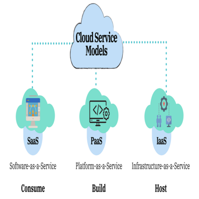

Galería de Imágenes


Explora los distintos tipos de servicios en la nube: IaaS, PaaS, y SaaS. Cada uno de estos modelos ofrece ventajas únicas, desde infraestructura completa hasta plataformas para desarrollar aplicaciones y servicios de software accesibles en cualquier momento.
El cloud computing permite una mayor flexibilidad, costos reducidos, y escalabilidad para empresas de todos los tamaños. Además, facilita la colaboración remota, el almacenamiento seguro y la accesibilidad desde cualquier dispositivo.
Aunque el cloud computing ofrece múltiples beneficios, también tiene desventajas, como la dependencia de la conectividad a Internet, riesgos de seguridad, y posibles problemas de privacidad. Es crucial evaluar estos factores antes de adoptar la nube.